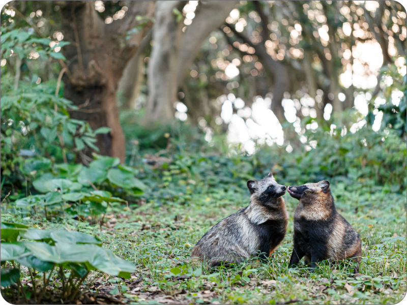
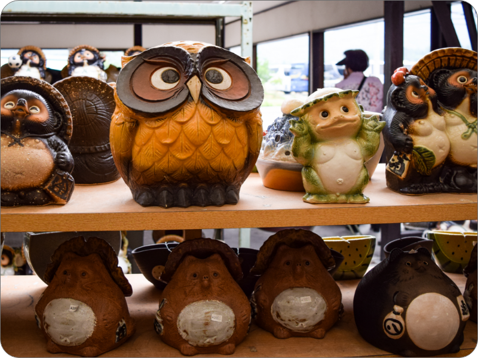

私たちについて
TANUKIFEE
TANUKIFEEへようこそ！私たちはタヌキをテーマにしたユニークなカフェです。タヌキは日本の伝説的な生物であり、幸運や繁栄の象徴とされています。私たちのカフェでは、その魅力的なイメージを取り入れ、楽しさとほっこりした雰囲気を提供します。

タヌキの世界へ
当店では、タヌキにインスパイアされたメニューをご用意しています。例えば、「タヌキモカラテ」や「タヌキベーカリーセット」といった、カワイイ見た目と美味しさが融合したオリジナルのドリンクや軽食を提供しています。また、タヌキのイラストやデザインが店内のさまざまな場所に取り入れられており、お客様にタヌキの世界観を楽しんでいただけます。
リラックス空間
私たちのカフェは、リラックスできる空間と心温まる雰囲気を大切にしています。タヌキのイメージが溢れた店内は、明るくアットホームな雰囲気を醸し出しています。お客様が忙しい日常から離れて、友人や家族とゆっくりとくつろげる場所となっています。
高級サービス
タヌキカフェでは、お客様の笑顔と満足度を最優先に考えています。私たちのスタッフは、心地よいサービスと温かいおもてなしを心掛けています。お客様が居心地の良さと癒しを感じながら、特別な時間を過ごしていただけるよう努めています。